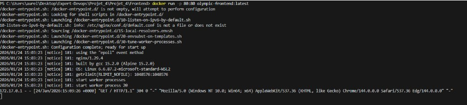
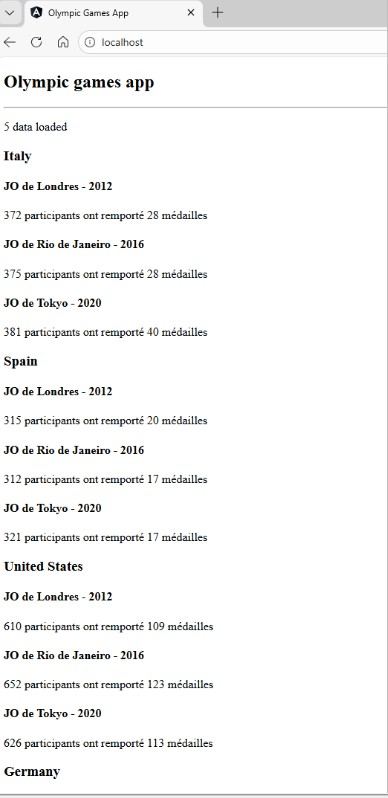

1️⃣ Démarrage du Docker File Frontend
Pour démarrer le frontend dockerisé, exécutez les commandes suivantes :
docker build -t olympic-frontend:latest .
docker run -p 80:80 olympic-frontend:latest

✔ Frontend dockerisé démarré
2️⃣ Vérification du frontend
Le frontend démarre correctement et s’affiche sur le port 80 du navigateur.
L’application est pleinement fonctionnelle depuis le conteneur.

✔ Frontend visible et opérationnel sur le port 80